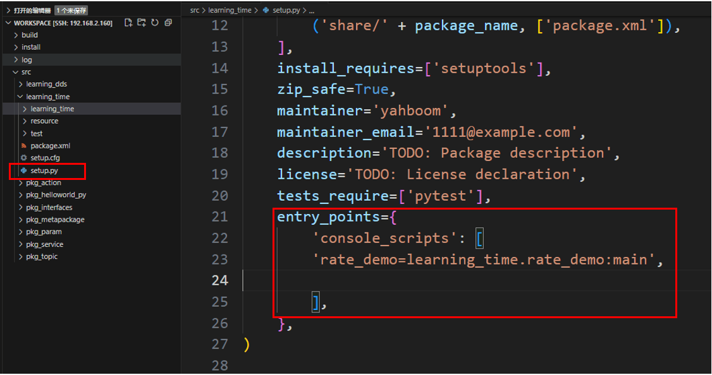
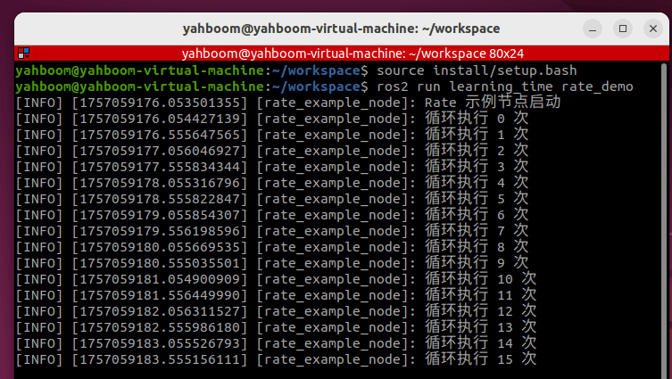
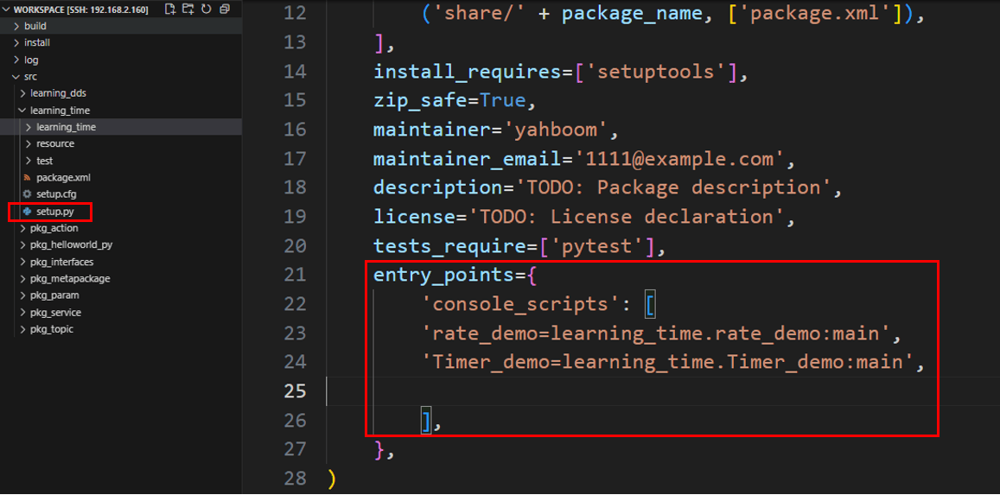
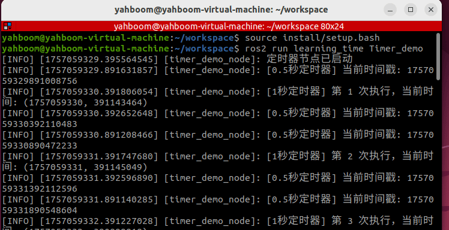
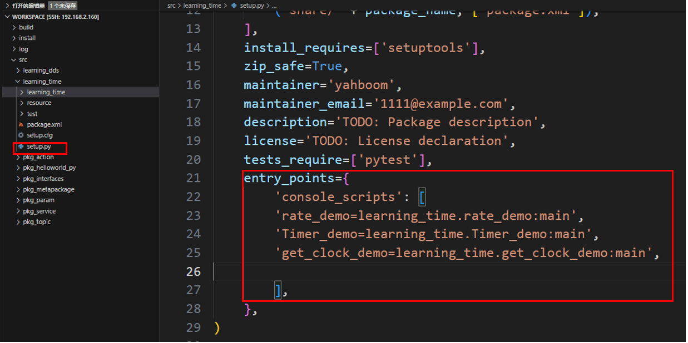
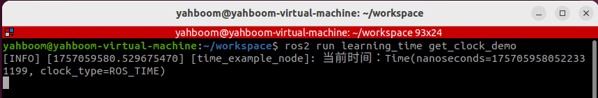
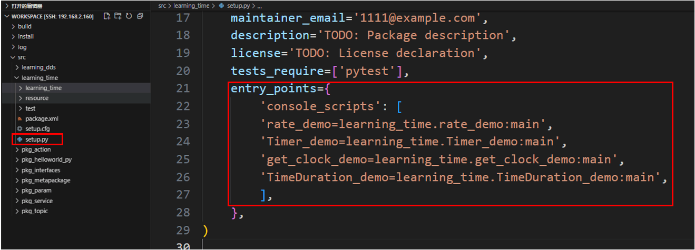
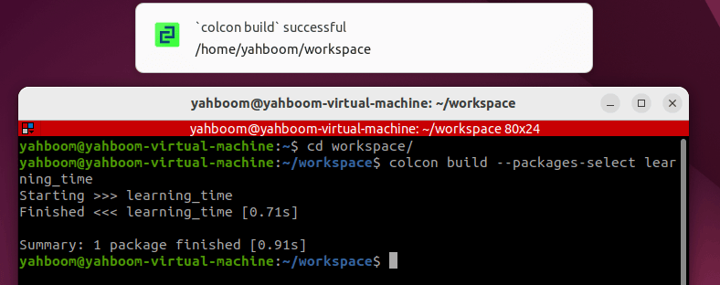
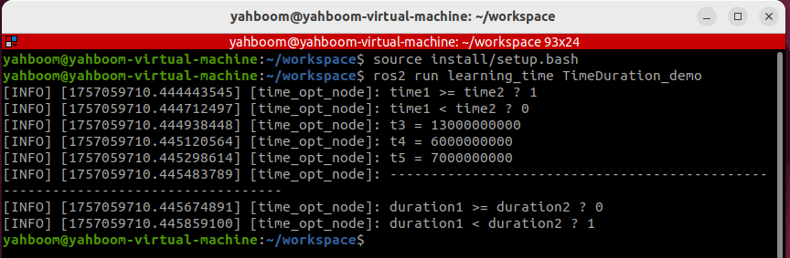

15. API для работы со временем в ROS2
1. Введение в API для работы со временем
К API ROS2, связанным с работой со временем, относятся Rate, Time, Duration и операции над Time и Duration. Они рассматриваются ниже.
- Сначала создайте пакет функций для хранения соответствующих файлов программы.
ros2 pkg create learning_time --build-type ament_python --dependencies rclpy
2. create_rate
ROS2 также предоставляет функцию create_rate — инструмент для управления частотой выполнения цикла. Её основная функция — периодическое выполнение участка кода с фиксированной частотой. Rate обеспечивает стабильность частоты выполнения цикла, управляя "временем ожидания" (sleep) цикла. Помните, что Rate, как правило, не следует использовать напрямую в главном потоке, так как это навсегда блокирует обработку событий обратных вызовов (callback). Обычно её используют только в программах с многопоточными обратными вызовами или в дочерних потоках.
Принцип работы:
- Записывается время начала каждой итерации цикла;
- Выполняется код внутри цикла;
- Вычисляется разница между фактической продолжительностью текущей итерации и целевым интервалом;
- Автоматически выполняется ожидание (sleep) на соответствующую разницу, гарантируя, что интервал от начала одной итерации до начала следующей строго равен целевому интервалу (например, 100 миллисекунд).
Хотя и Rate, и Timer позволяют реализовать периодическое выполнение, сценарии их применения различаются:
| Особенности | Rate | Timer |
|---|---|---|
| Реализация | Основана на активном ожидании (sleep) внутри цикла (блокирует текущий поток) | Основана на функциях обратного вызова (неблокирующая, запускается циклом событий ROS 2) |
| Сценарии применения | Подходит для циклов, которые должны выполняться с фиксированной частотой в рамках одного потока (например, основная логика управления) | Подходит для периодических задач, которые должны выполняться асинхронно (без блокировки главного потока) |
| Гибкость | Прямое управление потоком выполнения внутри цикла (например, выход через break) | Выполнение обратного вызова должно управляться с помощью флагов или других методов |
- Ниже приведён базовый пример использования Rate для реализации цикла, выполняющегося два раза в секунду. Создайте в пакете функций новый файл rate_demo.py
import rclpy
from rclpy.node import Node
import threading
class RateExampleNode(Node):
def __init__(self):
super().__init__("rate_example_node")
self.get_logger().info("Rate 示例节点启动")
def run_loop(self):
# Use the node's create_rate() to create a 2Hz Rate
rate = self.create_rate(2)
count = 0
try:
while rclpy.ok():
self.get_logger().info(f"循环执行 {count} 次")
count += 1
rate.sleep() # Sleep until the next cycle (0.5 seconds)
except KeyboardInterrupt:
self.get_logger().info("循环被中断")
def main(args=None):
rclpy.init(args=args)
node = RateExampleNode()
# Create a thread run loop (to avoid blocking the main thread)
loop_thread = threading.Thread(target=node.run_loop)
loop_thread.start()
# The main thread executes spin to keep the ROS 2 node running
try:
rclpy.spin(node)
except KeyboardInterrupt:
pass
finally:
loop_thread.join() # Waiting for the thread to end
node.destroy_node()
rclpy.shutdown()
if __name__ == "__main__":
main()
- Настройте соответствующий файл конфигурации setup.py и добавьте запись в console_scripts
'rate_demo=learning_time.rate_demo:main'
Скомпилируйте пакет функций
colcon build --packages-select learning_time
Обновите окружение рабочего пространства и запустите ноду
source ./install/setup.bash
ros2 run learning_time rate_demo


3. Применение Timer
Timer используется для создания таймера, запускающего периодические задачи.
Пример: создадим два таймера — один выводит счётчик выполнений каждую секунду, другой выводит текущее время каждые 0,5 секунды.
Создайте новый файл программы Timer_demo.py
import rclpy
from rclpy.node import Node
class TimerDemoNode(Node):
def __init__(self):
super().__init__('timer_demo_node')
# Counter, used to demonstrate the number of timer executions
self.counter = 0
# Create a timer: execute the callback function every 1 second
self.timer = self.create_timer(1.0, self.timer_callback)
# Create a faster timer: execute every 0.5 seconds
self.fast_timer = self.create_timer(0.5, self.fast_timer_callback)
self.get_logger().info("定时器节点已启动")
def timer_callback(self):
"""1 second timer callback function"""
self.counter += 1
current_time = self.get_clock().now()
# Print the current time and counter value
self.get_logger().info(
f"[1秒定时器] 第 {self.counter} 次执行，当前时间:
{current_time.seconds_nanoseconds()}"
)

def fast_timer_callback(self):
"""0.5 second timer callback function"""
# Print the current timestamp (nanoseconds)
self.get_logger().info(
f"[0.5秒定时器] 当前时间戳: {self.get_clock().now().nanoseconds}"
)
def main(args=None):
# Initializing ROS 2
rclpy.init(args=args)
# Creating a Node
node = TimerDemoNode()
# Running a Node
rclpy.spin(node)
# Shut down ROS 2
node.destroy_node()
rclpy.shutdown()
if __name__ == '__main__':
main()
- Настройте соответствующий файл конфигурации setup.py и добавьте запись в console_scripts
'Timer_demo=learning_time.Timer_demo:main'
Скомпилируйте пакет функций
colcon build --packages-select learning_time

Обновите окружение рабочего пространства и запустите ноду
source ./install/setup.bash
ros2 run learning_time Timer_demo
Видно, что таймер срабатывает в соответствии с заданным интервалом, и в каждом обратном вызове выводится соответствующая информация в лог.


4. Получение текущего времени с помощью get_clock
Функция get_clock позволяет получить объект часов, а затем с помощью вызова () получить текущее время.
Создайте новый файл программы get_clock_demo.py и заполните его следующим примером программы:
import rclpy
from rclpy.node import Node
from rclpy.time import Time
class TimeExampleNode(Node):
def __init__(self):
super().__init__("time_example_node")
# Get the node's clock object (the system clock is used by default)
self.clock = self.get_clock()
# Get the current time (return a Time object)
current_time = self.clock.now()
self.get_logger().info(f"当前时间：{current_time}")
def main(args=None):
rclpy.init(args=args)
node = TimeExampleNode()
rclpy.spin_once(node) # Run a node once
node.destroy_node()
rclpy.shutdown()
if __name__ == "__main__":
main()
- Настройте соответствующий файл конфигурации setup.py и добавьте запись в console_scripts
'get_clock_demo=learning_time.get_clock_demo:main'
Скомпилируйте пакет функций
colcon build --packages-select learning_time

Обновите окружение рабочего пространства и запустите ноду
source ./install/setup.bash
ros2 run learning_time get_clock_demo
5. Time и Duration
Класс Time в ROS представляет конкретный момент времени (например, "2023-10-01 12:00:00"), обычно используемый для отметки момента, когда произошло событие.
Класс Duration представляет интервал между двумя моментами времени (например, "5 секунд"), используемый для вычисления разницы во времени или задержек.
Пример: применение Time и Duration
Создайте новый файл программы TimeDuration_demo.py.
import rclpy
from rclpy.time import Time
from rclpy.duration import Duration
def main():
rclpy.init()
node = rclpy.create_node("time_opt_node")
# How to use the time class to create 'time points and moments'
time1 = Time(seconds=10)
time2 = Time(seconds=4)
# How to use the Duration class to create a 'duration, a period of time'
duration1 = Duration(seconds=3)
duration2 = Duration(seconds=5)
# Moments can be compared
node.get_logger().info("time1 >= time2 ? %d" % (time1 >= time2))
node.get_logger().info("time1 < time2 ? %d" % (time1 < time2))


# Time periods and times can be mathematically operated
t3 = time1 + duration1
t4 = time1 - time2
t5 = time1 - duration1
node.get_logger().info("t3 = %d" % t3.nanoseconds)
node.get_logger().info("t4 = %d" % t4.nanoseconds)
node.get_logger().info("t5 = %d" % t5.nanoseconds)
# Time periods can be compared
node.get_logger().info("-" * 80)
node.get_logger().info("duration1 >= duration2 ? %d" % (duration1 >=
duration2))
node.get_logger().info("duration1 < duration2 ? %d" % (duration1 <
duration2))
rclpy.shutdown()
if __name__ == "__main__":
main()
- Настройте соответствующий файл конфигурации setup.py и добавьте запись в console_scripts
'TimeDuration_demo=learning_time.TimeDuration_demo:main'
Скомпилируйте пакет функций
colcon build --packages-select learning_time

Обновите окружение рабочего пространства и запустите ноду
source ./install/setup.bash
ros2 run learning_time TimeDuration_demo
Этот пример доказывает, что над моментами времени и временными интервалами можно выполнять математические операции, что позволяет гибко запрашивать и обрабатывать данные с разными временными метками.

